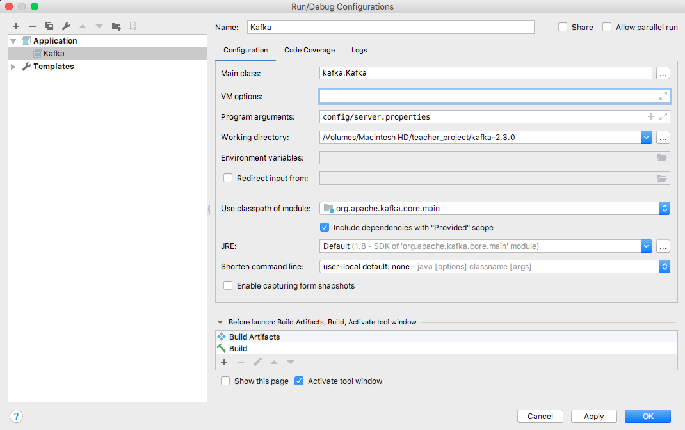
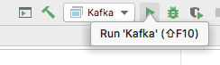
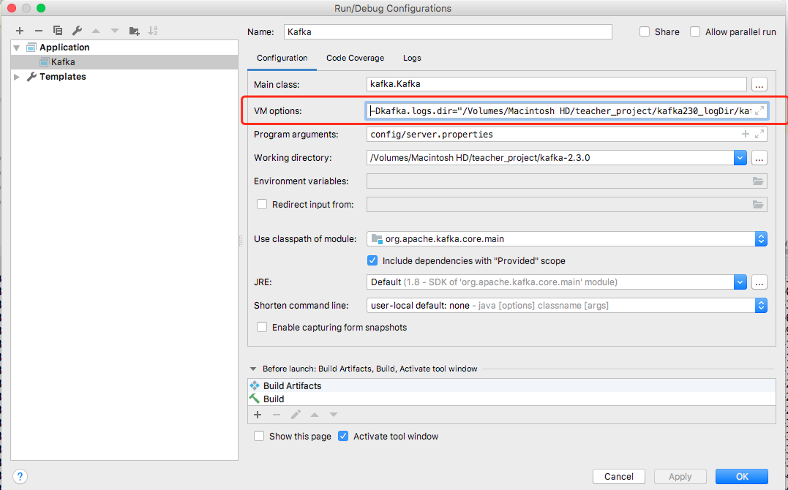

环境
- Java 8
- 本机版本
java version "1.8.0_141"
- 本机版本
- Gradle 5.0 or higher
- 本机版本
Gradle 5.4.1
- 本机版本
- 默认Scala 2.12,但也可以通过自定义的方式使用其他的scala版本.
- 本机版本
Scala code runner version 2.12.8
- 本机版本
- IDEA scala插件
- 本机版本
v2018.3.7
- 本机版本
将代码导入到IDEA
将代码克隆到当前文件夹
git clone -b 2.3.0 https://github.com/apache/kafka.git在下载的项目根目录下执行gradle的idea task
gradle idea
通过代码编译执行启动kafka服务
kafka服务需要zookeeper管理元数据,kafka服务的启动所以需要有zookeeper服务运行作为保证,zookeeper服务的ip:port需要配置到
config/server.properties.kafka的消息是以日志文件的形式存储的,所以还需要配置消息日志的存储路径
本机
config/server.properties添加的配置如下1
2log.dirs=/Volumes/Macintosh\ HD/teacher_project/kafka230_logDir/kafka_logs
zookeeper.connect=kafka:2181编辑启动配置项
 kafka服务程序配置 启动kafka服务程序
 启动
排坑
org.apache.kafka.common.message不存在
启动的build过程中,会出现org.apache.kafka.common.message不存在的Error.新版kafka将request和response的格式类改成自动生成了,所以缺少org.apache.kafka.common.message这个package,因此需要执行gradle的jarall task (参考),生成的message包会以generated包的形式存在,将生成的message包移动到org.apache.kafka.common的位置.
gradle jarall
java.lang.stackOverflowError
启动的build过程中,会出现java.lang.stackOverflowError
这是因为javac的编译检查设置造成的,比如范型使用不规范会出现这个问题,这个问题通过修改java compiler的配置解决
Failed to load class "org.slf4j.impl.StaticLoggerBinder"
提示:https://www.slf4j.org/codes.html#StaticLoggerBinder
这是由于没有slf4j的实现jar包.解决方式为将slf4j-log4j12.jar加入到core/main的dependency中.
log4j:WARN No appenders could be found for logger
由于没有log的配置文件,将config/log4j.properties分别复制到core/src/main/scala和core/out/production/classes中
log4j:ERROR setFile(null,true) call failed.
java.io.FileNotFoundException: /logs/server.log
这是由于未能找到日志的输出路径. log4j.propertties中的这种配置log4j.appender.stateChangeAppender.File=${kafka.logs.dir}/logs/state-change.log,得不到${kafka.logs.dir},有两种解决方式:
可以将
${kafka.logs.dir}改成绝对路径通过配置启动项的方式,将kafka.logs.dir的值加入到vm的参数中(参考)
-Dproperty=value
Sets a system property value. The property variable is a string with no spaces that represents the name of the property. The value variable is a string that represents the value of the property. If value is a string with spaces, then enclose it in quotation marks (for example
-Dfoo="foo bar"). VM options